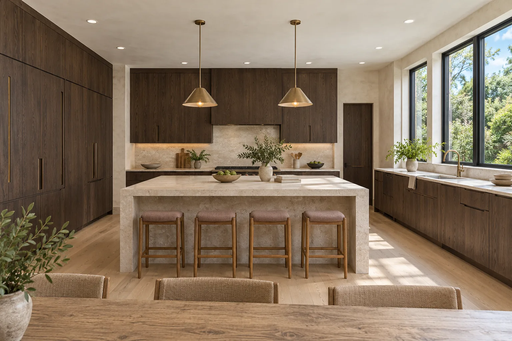

Interior Renovation
Living rooms, libraries and whole floors rebuilt with built-in cabinetry, new lighting and finishes that fit together cleanly.
Learn moreInterior renovation contractor in Evanston, Wilmette, Winnetka & Glencoe
Atelier North builds kitchens, bathrooms and interiors for North Shore homeowners and the designers they work with. We take care with the parts you see and the parts you don’t, from the framing behind the cabinets to the last tile joint.
Over 100 interiors completed


What we do
Living rooms, libraries and whole floors rebuilt with built-in cabinetry, new lighting and finishes that fit together cleanly.
Learn moreKitchens and bathrooms built from your designer’s drawings or ours, with careful attention to cabinets, tile, stone and ventilation.
Learn more
Garden rooms, mudrooms and primary suites, detailed to match the house inside and out.
Learn more
What our clients say
“They cared about how we use the room as much as how the materials looked together.”